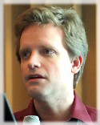
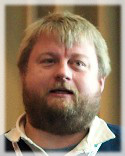

Git tree maintenance
H. Peter Anvin is one of the maintainers of the "tip" tree, which
takes its name from the first names of the group that manages it: Thomas
Gleixner, Ingo Molnar, and Peter. This tree was started in 2007; it was
initially focused on the x86 architecture tree, but has since expanded into

There are three types of branches maintained in the tip tree. "Topic branches" contain patches that are intended to be pushed during the next merge window. "Urgent branches" contain bug fixes that need to go in before the merge window, while "queue branches" hold patches that will be pushed in some merge window after the next one. So, as of this writing, when the 3.12 development cycle is nearing its end, topic branches will hold changes for 3.13, while queue branches hold changes for 3.14 or later.
All of these branches are periodically integrated into the tip "master" branch; Peter described master as their version of linux-next. This merge is done by hand, usually by Ingo, who then feeds the result to his extensive testing setup.
Other tip practices include tip-bot, a program which sends out notifications when patches are added to a tip branch. Those notifications used to only go to the patch author, but they have since been expanded to include the linux-kernel list as well. Patches in tip routinely include a "Link:" tag pointing to the relevant mailing list discussion. There is a status board in the works, based on Fengguang Wu's testing setup.
Olof Johansson talked about the management of the arm-soc tree, which was
started by Arnd Bergmann in July, 2011. Olof joined that effort later that
year; more recently, Arnd
has been on paternity leave, so Kevin Hilman has joined the team
to help keep things going. This tree, which is focused on system-on-chip
support for the ARM architecture, is run with no master branch. Instead,
there is a large set of branches, mostly with a "next/" prefix for

All of these branches lead to a lot of merges — about 150 of them for each kernel development cycle. Olof said that newcomers tend to have a bit of a rough start as they figure out how the arm-soc tree works, but, after a while, things tend to run smoothly.
Olof mentioned a few "pain points" that the arm-soc maintainers have to live with. At the top of his list was the time period around when Linus releases -rc6; that's when a whole lot of new code comes in. It gets hard to pick a reasonable time to cut things off for the upcoming merge window. Having two levels of trees tends to add latency to the system, which doesn't help. There is also an ongoing stream of merge conflicts, both within arm-soc and with linux-next, and troubles with dependencies on external trees that get rebased by their maintainers.
Repeating a common lament, Olof said that the arm-soc maintainers are unable to keep up with the traffic on the ARM mailing lists. So they depend on the submaintainers review patches and keep inappropriate changes out.
Arnd closed the session with a quick discussion of the process of moving most device drivers out of the ARM tree and into the regular kernel drivers tree. This work has caused a lot of merge conflicts, he said. But he expressed a hope that, once all the drivers are gone, there will be little need for a separate arm-soc tree and they will be able to stop maintaining it.
[Next: Scalability techniques]
| Index entries for this article | |
|---|---|
| Kernel | Development tools/Git |
| Conference | Kernel Summit/2013 |